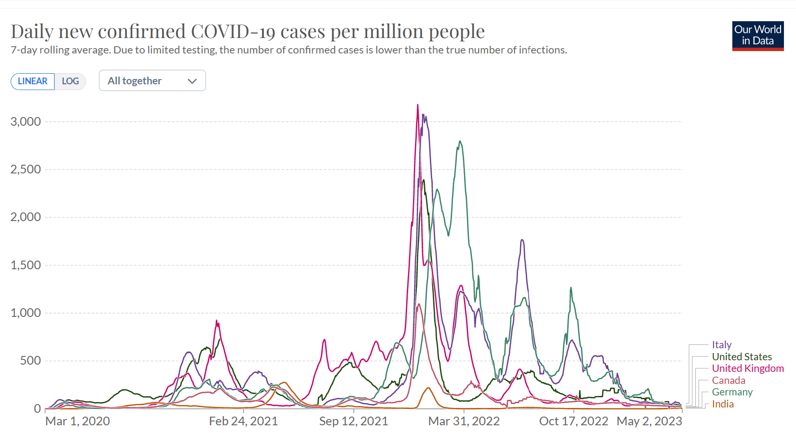

Coronavirus disease (COVID-19) is an infectious disease
Coronavirus disease (COVID-19) is an infectious disease caused by the SARS-CoV-2 virus.
Most people infected with the virus will experience mild to moderate
respiratory illness and recover without requiring special treatment.
However, some will become seriously ill and require medical attention.
Older people and those with underlying medical conditions
like cardiovascular disease, diabetes, chronic respiratory disease,
or cancer are more likely to develop serious illness.
Anyone can get sick with COVID-19 and become seriously ill or die at any age.
To prevent infection and to slow transmission of COVID-19, do the following:
Get vaccinated when a vaccine is available to you.
Stay at least 1 metre apart from others, even if they don't appear to be sick.
Wear a properly fitted mask when physical distancing is not possible or when
in poorly ventilated settings.
Choose open, well-ventilated spaces over closed ones. Open a window if indoors.
Wash your hands regularly with soap and water or clean them with alcohol-based
hand rub.
Cover your mouth and nose when coughing or sneezing.
If you feel unwell, stay home and self-isolate until you recover.
Most common symptoms:
fever
cough
tiredness
loss of taste or smell.
Less common symptoms:
sore throat
headache
aches and pains
diarrhoea
a rash on skin, or discolouration of fingers or toes
red or irritated eyes.
Serious symptoms:
difficulty breathing or shortness of breath
loss of speech or mobility, or confusion
chest pain.
Seek immediate medical attention if you have serious symptoms.
Always call before visiting your doctor or health facility.
People with mild symptoms who are otherwise healthy should manage their symptoms at home.
On average it takes 5–6 days from when someone is infected with the virus for symptoms to show,
however it can take up to 14 days.
THERE ARE SOME GRAPHICAL DATA.
